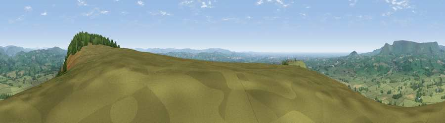

Viewpoint near Chipping
#3403 in England · top 5% of its area beats it · near Chipping · open accessWhere it is
The exact computed spot (SD 64525 40500). Click the marker for map links.
Public access: this spot lies on mapped open-access land (CRoW Act 2000) — you may roam here on foot. Computed from Natural England's CRoW access layer and OpenStreetMap rights of way — not the legal definitive map. Always verify locally.
The view, rendered

A 360° render of this exact spot computed from the terrain model, tree cover and land cover — summer colours, afternoon light, calibrated against photographs of famous viewpoints. Real trees, hedges and buildings will differ in detail.
The panorama
Grey silhouette: terrain skyline in each direction (720 bearings, Earth curvature and refraction included). Dashed green: skyline with trees (+15 m) and buildings (+8 m) as obstacles. Blue strip: how far the ground is visible on each bearing.
Where the view opens
Wedge length = distance to the farthest visible ground on that bearing (vegetation-aware). Rings at 10, 25 and 50 km.
What fills the view
82% grassland · 13% woodland · 3% cropland · 2% built-up ·
Angular shares of the visible panorama (visual magnitude), not map area. Landscape diversity 0.27 (0–1 Shannon).
Key numbers
More beautiful places nearby
The staircase of upgrades: each row has a higher view potential than everything closer. Driving times are estimates from straight-line distance, calibrated against real road routing — check an actual route before setting out.
| Place | Direction | Drive | Score |
|---|---|---|---|
| Viewpoint near Chipping | WSW · 1 km | ~3 min | 73.6 |
| Parlick | NW · 7 km | ~14 min | 77.5 |
| Viewpoint near Scorton | WNW · 15 km | ~27 min | 79.9 |
| Darwen Hill | S · 19 km | ~33 min | 80.7 |
| Rivington Pike | S · 27 km | ~43 min | 81.9 |
| White Brow | S · 28 km | ~45 min | 82.9 |
| Warton Crag | NNW · 36 km | ~54 min | 83.2 |
| Viewpoint near Grange-over-Sands | NW · 45 km | ~66 min | 83.4 |
53.85950, -2.54085 · source: screening · position refined by local search. Computed location — check access rights before visiting.